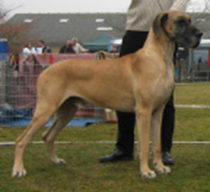
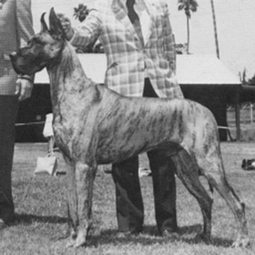
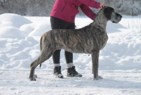

Выставочная собака
Экспертиза собаки
Квадрат

|

|
Голова
 |
Паралельность линий головы имеет важнейшее значение при оценке. Это то, что характеризует породу. Важно понимать, что является причиной непараллельности. У молодых собак (до 18 месяцев) голова растет, окончательно линии формируются после созревания. В профиль линии головы должны быть прямыми и параллельными. |
 |
|
 |
Схождение линий морды и черепа обычно сопровождается округлостью черепа |
|

|

|
|
| Очень важную роль роль для головы имеет форма губ. Они должны быть квадратными и образовывать как можно более прямой угол к перпендикуляру линии морды. |
|

|

|

|
 |

|
|

|
 |

|
 |
 |
Голова сверху должна быть прямоугольной ("коробка от обуви" или "кирпич"). Морда, чья длина должна быть равной длине черепа должна быть максимально широкой. Продольные линии морды должны быть параллельны линиям черепа. |
|
|

|
|
|
 |

|
Глаза

|
|

|

|
|

|

|

|
|
Уши
|

|

|

|
|

|
|
|

|

|
|

|
Шея
| Шея вместе с головой придают догу то, что называется аристократичность, или благородство. Важнейшие характеристики шеи - ее длина, изгиб и наклон. Все три характеристики имеют значение, если отсутствует "подвес" - излишек кожи под головой на шее. |

|
|

|

|

|
|

|
|

|
|
Корпус
|

|
|
|
|
|

|

|

|

|
|

|
|
|
|
|

|
|

|
|

|
|
|
Подборка рисунков Jill Evans. Опубликовано Laura Munro.
***
Пропорции и баланс немецкого дога
Фрагменты, заключенные в двойные кавычки, взяты из стандарта породы Great Dane, вступившего в силу 28 апреля 1999 года, доступного на сайте AKC (American Kennel Club). Изменения стандарта, принятые в 2010 году, не касались баланса или пропорций.
При первом взгляде на породистую собаку обычно рассматривают отдельные ее компоненты: голову, окрас, переднюю и заднюю часть, хвост. По мере более внимательного изучения происходит переход к восприятию собаки в целом. "Собака в целом" не означает, что типичные черты породы менее важны. Это значит, что типаж породы определяется всей собакой так же, как отдельными чертами.
Сбалансированная, цельная собака не просто имеет отдельные или хорошие все части. Эти части находятся в правильном соотношении друг с другом. Стандарт описывает дога так: "...общее строение должно быть сбалансированным...." и "...это всегда единое целое - Аполлон среди собак".
Словарь определяет баланс как "гармоничное или правильное соотношение". При оценке судьи видят собак в целом и определяют какие из них правильно сбалансированы ранее, чем увидят какие-либо детали. Если общая форма и баланс неправильные, эта собака, скорее всего, не будет оцениваться.
Пропорция определяется как отношение между предметами (или частями предметов) в отношении их сравниваемого количества, величины или соотношения.
| Вот одна собака. В чем он хорош? Что бы вы изменили? Как у него с балансом? |
|
 |
Вот другая собака. Здесь она представляет единое целое, сбалансированное и естественное. Чувствуете разницу? |
Баланс
Однако, чтобы понять баланс нужно не только смотреть на картинку. Существуют точные пропорции, на которые следует обратить внимание. Некоторые из них прямо взяты из стандарта породы, другие будут вытекать из стандарта.
Первая фраза стандарта гласит: "Немецкий дог сочетает в своем царственном облике достоинство, силу и элегантность с большим размером и мощным, хорошо сформированным мускулистым телом". Сила, мощь и мускулистое тело - это слова, обозначающие сильную, основательную собаку. Основа баланса для дога - это равное количество большого размера, элегантности и большой силы. Равное сочетание этих трех качеств - часть того, что отличает дога от других пород.
Размер дога - это рост собаки. Стандарт устанавливает минимальную высоту 30 дюймов (около 75см) для кобелей и 28 дюймов (70см) для сук (а желательно больше). Эти минимальные значения относятся к шестимесячным щенкам, когда они впервые выходят на ринг. В иллюстрированном стандарте [Американского клуба породы] говорится, что средний рост взрослых особей составляет 34 дюйма (85см) для кобелей и 32 дюйма (80 см) для сук. Там также говорится, что при прочих равных условиях более крупные доги предпочтительнее. Большой рост - это достоинство, хотя, конечно, не единственное. Если это хороший дог, сбалансированный и здоровый, он не может быть слишком высоким. Многие характеристики придают этим собакам элегантность. Длина головы, шеи, ног имеют большое значение для элегантности. Углы и изгибы, "гладкое мускулистое тело" также вносят свой вклад, равно как и "подчеркнутая подтянутость". Многие определения элегантности включают грациозность, которая происходит из плавных непрерывных чистых линий и изгибов.
Основательность, сила и мощь проявляются в хорошей мускулатуре и костях. Глубина и ширина являются характеристиками корпуса и грудной клетки. Кобель "массивнее" чем сука, но оба массивны. Массивность должна быть уравновешена элегантностью.


Суки на этих фото иллюстрируют баланс размера, элегантности и мощи; в них есть
гармония.
Кобели на фото также обладают элегантностью, размером и мощью.
Квадрат
Следует обратить внимание на длину головы, шеи и ног.
Стандарт говорит, что пропорция роста к длине туловища у догов - квадрат, при этом у сук допускается немного более длинное тело. В стандарте сказано, что рост измеряется "по плечу". Но там не к чему привязаться, поэтому мы измеряем от холки над высшей точкой плеча до земли. Длина - от точки плеча (сустава между плечом и верхней частью ноги - предплечьем) до седалищной кости.
Поскольку доги высокие, и холка у них высоко, выше спины, оптическая иллюзия может повлиять на то, что видит судья. Глаза притягиваются к линии спины, самой длинной горизонтальной линии, как к вершине квадрата. На самом деле, вершина квадрата может быть на пару или более дюймов выше спины. В результате линии собаки, которая выглядит квадратной, на самом деле могут быть вертикальным прямоугольником, более высоким, нежели длинным. Дог, который на самом деле имеет квадратные размеры, будет выглядеть не совсем квадратным, немного длиннее, чем оптический квадрат. Однако не стоит любой ценой получить четкий квадрат. Важны и основательность и элегантность. В стандарте говорится, что "грубость или недостаток мощи одинаково нежелательны".
Рост и углы дога могут меняться в течение его жизни. Он невысокий и очень угловатый в щенячьем возрасте. В подростковом возрасте, после скачка роста, он становится выше и сглаженнее.


Какие из собак на фото квадратные? Палевый кобель квадратный, тогда как суки, скорее, укороченные.
Кобели и суки
В стандарте написно: "Кобель должен выглядеть более массивным, чем сука, с более крупным корпусом и более тяжелым костяком". Чтобы определить пол, не нужно смотреть на вторичные половые признаки. Будучи более массивными, у кобелей больше костяка, более глубокое и широкое тело, более глубокая и широкая голова, а также более высокий рост. Следует обратить внимание, что здесь не говорится, что суки меньше, а кобели - больше. Если сука высокая и плотная с соответствующей элегантностью, а кобель меньше, то это, скорее, в негативе для кобеля, чем к достоинству суки.

Кто из собак на фото кобель, а кто сука? Тигровый - это кобель. Кто менее правильно сложен? Когда бы был категоризированный список недостатков, кобель, выглядящий как сука - серьезный недостаток, а сука, похожая на кобеля - незначительный. Поэтому сука более корректна.
В стандарте говорится, что "мужественность кобеля очень ярко выражена в структурном оформлении головы. Голова суки более деликатно сложена".
Кто из двух
собак на фото кобель, а кто сука?
На фото слева голова суки, справа - кобеля. Относительные пропорции у обоих
примерно одинаковы.
Длина головы кобеля не намного больше длины головы суки.
Ярко выраженная мужественность проявляется в размерах, глубине и ширине
головы. Кобель имеет более глубокий череп, более глубокую морду и более
выраженныый стоп. Более деликатно сформированная голова суки заметно менее
глубокая и широкая.
Голова
Стандарт четко описывает пропорции головы, как специфичные, так и производные. Она "прямоугольная, длинная", ее плоскости "прямые и параллельные" и "угловатые со всех сторон". Длина морды равна длине черепа до затылочного бугра.
Голова описана как прямоугольная. Ппрямоугольники должны иметь длину больше ширины (или высоты) и быть одинаковы по высоте на обоих концах. Поэтому прямоугольная голова должна иметь одинаковую глубину черепа, равно как и глубину морды.
Длина морды равна длине верхней части черепа, а глубина черепа и морды не меняется. Таким образом, когда голова хорошего дога в профиль разделена по вертикали на стопе, ни череп, ни морда не должны казаться больше друг друга. У некоторых догов морда слишком короткая и мелкая по сравнению с черепом, что делает голову несбалансированной.
Прямоугольный вид должен быть виден и спереди. Это подтверждается тем, что череп имеет "параллельные стороны", "переносица должна быть как можно шире" и "уши должны быть высоко поставлены".
Стандарт описывает стоп как "явно выраженный при виде сбоку". Выраженный стоп - это результат работы бровей, а не глубокой впадины между глазами. Как часть маскулинности кобеля, стоп кобеля более выраженный, более высокий, чем у суки. Глубина стопа в породе должна быть правильной, чтобы голова была правильной. Правильная глубина стопа у дога в профиль составляет около двадцати процентов от глубины черепа. Верхняя часть морды примерно на двадцать процентов ниже, чем верхняя линия черепа. Для баланса низ морды с губой опускается примерно на те же двадцать процентов ниже челюсти черепа, чтобы сохранить прямоугольную форму.
 |
Голова суки на фото прямоугольная - глубина черепа и глубина морды одинаковы. Она длинная, и длина морды равна длине черепа. Помните, что уши находятся на голове, поэтому при сравнении длины морды и черепа затылок находится за ушами. |


Головы на этих фото также правильно пропорциональны и сбалансированы, как в фас, так и в профиль
Шея
Шея у дога длинная. У сбалансированной собаки шея примерно такой же длины, как и голова. Ширина шеи посредине примерно равна глубине черепа. Шея должна "плавно перетекать в холку" и наоборот. Правильная шея вносит значительный вклад в элегантность. Собака с хорошей шеей выглядит хорошо.
|  | Короткая шея отнимает элегантность и делает ее грубой и неуравновешенной. |
 |
У суки на фото - хорошая шея . С длинной шеей, плавно переходящей в холку и далее в спину, она обладает элегантностью. Как голова сбалансирована с шеей? Шея почти правильной длины. Голова могла бы быть длиннее и больше в целом, с более длинной и глубокой мордой. Это улучшило бы ее баланс. |
 |
На фото красивая сука со сбалансированной головой и шеей. Обратите внимание на плавный переход от шеи к холке и спине и плавность линий в целом. Капля воды, помещенная на затылок, непрерывно стекает по верхней линии контура к крупу и далее по хвосту. Длина головы и шеи примерно одинакова. Глубина черепа и ширина шеи на половине расстояния между затылком и холкой примерно равны. Здесь также хорошее соотношение длины ног и глубины корпуса к голове и шее. Все это подчеркивает баланс большого размера с мощью и элегантностью. |
На фото красивая сука с головой и шеей в балансе. Обратите внимание на плавный переход от шеи к холке и спине и плавность линий в целом. Капля воды, помещенная на затылок, также непрерывно стекает по верхней линии контура корпуса к крупу и далее по хвосту. |
Передние ноги
В стандарте много говорится о передних конечностях. "Лопатка ... образует, насколько это возможно, прямой угол ... с плечом". Угол, под которым "возвращается" плечо, должен быть равен углу отведения плеча. Концепция плеча под прямым углом родилась благодаря Рейчел Пейдж Эллиот и ее книге "Оригинальные шаги собаки". Годы спустя доктор Квентин ЛаХэм оспорил эту степень угловатости на собаках с нормально пропорциональной длиной ног, и убедил мисс Эллиот, что угол должен быть несколько более открытым, чем девяносто градусов. Действующий на время публикации стандарт FCI определяет угол в 100 градусов.
"Линия от верхнего окончания лопатки до задней части локтевого сустава должна быть перпендикулярна" (земле). "Лопатка и плечо должны быть одинаковой длины". Найдите верхнюю часть лопатки. Отвес, опущенный из этой точки вертикально на землю, должен попасть на заднюю часть локтя, а также на подушечку стопы. Когда собака на ринге издает стонущие звуки во время движения или в стойке, это - следствие неправильных действий хэндлера, ее передняя часть при этом выглядит несбалансированной.
Угол наклона лопатки и плеча должен направлять переднюю ногу под центр тяжести собаки для наилучшей поддержки. Передние ноги не должны опускаться под шеей собаки, что происходит при плохих углах или "передней постановке". Когда передние ноги находятся под шеей, корпус не имеет достаточной опоры, и верхняя линия контура корпуса не будет строгой и ровной.
Следует обращать внимание на термин "передние конечности". По сути, он означает, что передняя часть собаки, от линии плеч до локтей и вперед, составляет четверть длины собаки. Задние конечности - задняя часть - это еще одна четверть. А между ними - половина длины собаки в профиль. Правильный баланс подразумевает эти пропорции.
Стандарт говорит: "Высота до локтя должна составлять половину расстояния от холки до земли". Есть мнение большинства породников, которое считает, что локоть до земли должен быть чуть больше половины, может быть, на дюйм или около того, в зависимости от роста собаки. Элегантность вытекает из длины, в том числе длины ног. До 1990 года стандарт GDCA не требовал пропорции 50 на 50; стандарт FCI не требует этого и сегодня.
 |
На фото хорошо отведенное назад плечо и хороший выход верхней части ноги. Плечо выглядит одинаковой длины с размером лопатки. Локоть находится под кончиком лопатки, а линия, проведенная от этих точек, попадает на подушечку стопы. Локоть находится на середине высоты до холки. Немного большая длина ноги придала бы ей больше элегантности, а также сделала бы ее пропорцию ближе к квадрату. |
На фото плечо отведено назад, а верхняя часть ноги выходит примерно под тем же углом, так что локоть находится под самым верхним кончиком плеча. Передние ноги находятся под корпусом, а не под шеей. Передние ноги немного длиннее глубины корпуса. |
 | На фото передняя часть собаки хорошо сбалансирована с корпусом. >Локоть под точкой плеча. Правую переднюю лапу не видно, так как она выходит под собакой за передней частью груди. |
 |
На фото плечо отодвинуто назад, но лопатка не ввыходит под нужным углом. Отсутствие выхода приводит к тому, что передние ноги оказываются под шеей и поэтому не обеспечивают поддержку самой тяжелой части собаки. Обратите внимание, как это влияет на нижнюю линию контура - она намного длиннее от локтя до задних конечностей по сравнению с собаками на фото выше. |
|  | Баланс в передней части включает в себя длину и расположение плеча и предплечья, а также длину передней лапы. Передняя часть корпуса своей формой и расположением вносит вклад в баланс всей собаки. Большая грудь, выставленная вперед у собаки, также негативно влияет на баланс. |
Корпус
Часть между передними и задними конечностями составляет примерно половину длины собаки. Стандарт требует "короткой ровной спины", "широкой поясницы", "широкой, глубокой груди". "Грудь с хорошо выраженными ребрами опускается до локтя". "Нижняя линия контура тела...выделяет... подтянутый живот".
Широкая поясница, широкая глубокая грудь, опускающаяся до локтя и выраженная грудная клетка способствуют мощи. Хорошо выраженная подтянутость является частью элегантности.
На фото короткая ровная спина, широкая глубокая грудь, грудь до локтя обеспечивают почти квадратный профиль. Хотя собака подтянута, у нее есть юбка (кусок кожи) ниже поясницы, которая скрывает часть паха. Юбка является характерной чертой гончих собак, и это вполне естественно, так как доги относятся к гончим. Если юбка слишком низкая, из-за чего линия подворота выглядит прямой, собака может выглядеть грубо - слишком много плоти, слишком мало элегантности, скрытый пах. |
|
 |
На фото средняя часть тела, между передними и задними четвертями, составляет половину длины собаки. Посмотрите на разницу в длине всего тела собаки по сравнению с длиной нижней линии контура от локтя до бедра. |
 |
Сбалансирована ли собака на фото? Ее голова и шея сбалансированы. Плечо отведено назад, хотя верхняя часть лапы могла бы выходить больше. Насколько сильно длина тела нарушает баланс? Длина определяется грудной клеткой, а не поясницей. Длина определяется нижней линией контура тела, а также его общей длиной. |
Влияние контура на баланс
 |
Грубый контур. Мощь без элегантности. Спрямленные линии. |
Утонченный контур. Элегантность без элегантности. Крайняя степень подтянутости. |
 |
Сочетание мощи и элегантности. Хорошо выраженный контур. |
Задняя четверть
Задняя четверть - часть собаки находящаяся между началом крупа и до конца седалища. Линейный размер передней и задней части собаки примерно равны у сбалансированного дога. Круп "широкий" - со стороны и сзади и "чуть наклонный". Широкий круп обеспечивает широкую и мускулистую верхнюю часть бедра. Верхняя часть бедра и нижняя (вторая) часть бедра имеют одинаковую длину. Зад должен быть хорошо сбалансирован, соответствовать передней части. Бедра относительно короткие ("хорошо опущенные").
 |
У тигровой суки длина крупа не гармонирует с шириной верхней части бедра. Более широкое и мускулистое бедро выглядело бы лучше. Верхняя часть бедра имеет ту же длину, что и нижняя. Нижняя часть бедра имеет хорошую ширину. |
 |
У тигрового кобеля хорошие угловатые передние и задние конечности. Бедра относительно короткие. |
У палевой собаки широкий круп обеспечивает сильную мускулатуру бедер сзади. |
Баланс при движении
Общий вид и баланс собаки должны сохраняться во время движения. При описании движения рысью стандарт предусматривает следующее:
"Длинные, легкие шаги", "голова вынесена вперед". "Верхняя линия контура... ровная и параллельная земле". "Длинный охват...", передняя нога "опускается на землю под носом", "Задняя часть... соответствует передней".
 |
Шея наклонена под углом примерно 45 градусов. Передняя нога опускается на землю на линии носа. Выброс передних и задних ног примерно одинаков. Обе ноги не поднимаются высоко от земли. Задняя нога приземляется на место, только что освобожденное передней ногой. Спина ровная, без наклона вверх или вниз. Передняя лапа и бедро вытягиваются. |
 |
Линия задней ноги ровная - собака движется как единое целое. Хорошая синхронизация ног. Передняя и задняя части вытянуты. Хотя это движение лучше, чем большинство других, следует обратить внимание, что передняя нога вытянута больше, чем задняя, и выше, чем передняя нога на фото выше. Вытяжение передней ноги на первом фото в большей степени включает верхнее плечо и является более эффективным движением. |
 |
Спина ровная, голова и шея вытянуты. Выброс и отступ эквивалентны. Синхронность постановки ног внизу правильная. Нога и носок вытянуты. Движение как единое целое. |
 |
Обратите внимание на симметрию передней и задней частей, разгибание и сгибание локтевого, коленного и тазобедренного суставов. Задняя линия остается ровной. Она представляет собой "единое целое". |
 |
На фото вытянутость передней части не соответствует задней. Линия спины "бежит вниз по склону". Передняя нога не опускается под носом. |
Сравнение со стандартами других пород
Стандарты других пород также описывают пропорции, которые могут быть интересны при рассмотрении пропорций догов.
Стандарт самоеда говорит, что длина скакательного сустава составляет "приблизительно 30 процентов от высоты бедра". Стандарт догов требует "хорошо опущенного" - короткого - скакательного сустава. Треть от высоты бедра дает как раз такую пропорцию.
 |
 |
Стандарт большого шнауцера описывает породу как "почти квадратную". Далее написано: "Общая длина головы составляет примерно половину длины спины (от холки до основания хвоста)".
Применима ли эта пропорция и к догу? Это может зависеть от того, как измерять - от начала или от конца холки.
 |
Стандарт ротвейлера требует, чтобы локоть находился на половине роста собаки. Для ротвейлера и палевого дога расстояние от локтя до земли составляет половину роста собаки в холке. Длина ноги тигровой суки от локтя до земли - на один дюйм больше, чем половина ее роста. Длинные ноги - это часть того, что делает дога элегантной породой.
 |
 |
 |
В нашем стандарте сказано, что голова "длинная", но не сказано, насколько длинная. В стандарте бладхаунда указано, какой длины у них голова: 12 дюймов для кобелей, 11 дюймов для сук. Доги крупнее, чем бладхаунд; разумно ожидать, что голова дога будет длиннее...
 |
 |
Оценивайте собаку в целом
Посмотрите на собаку целиком, посмотрите на контур собаки, чтобы увидеть пропорции и баланс. Посмотрите на собаку в движении, чтобы убедиться, что вы видите реальную собаку, а не презентацию, и чтобы увидеть баланс в движении. Практикуйтесь в оценке своих собак и других собак в ринге. Некоторые вещи, на которые следует обратить особенное внимание, являются частью баланса:
➤ Общий размер, мощь и элегантность
➤ Рост и длина собаки
➤ Длина головы, длина шеи, длина ног
➤ Пропорции головы: прямоугольная форма, длина и глубина морды и черепа
➤ Верхняя линия контура и линия под грудью
➤ Длина всей собаки по сравнению с длиной нижней линии контура
➤ Мощь и костяк
➤ Передние углы и пропорции
➤ Задние углы и пропорции
➤ Пропорции корпуса в передней и задней четверти
➤ Весь контур
Правильно ли собраны части собаки? Подходят ли они друг другу? Плавно ли они переходят от одной к другой?
Посмотрите на фото собак. Что находится в равновесии? Что можно изменить? Мощь в противоположность элегантности? Форму головы и морды по сравнению с черепом? Длину и ширину шеи, переход к холке и спине? Переднюю часть: длину плеча по сравнению с лопаткой? Задние углы? Круп, ширину и длину верхней и нижней части бедра?
Оцените каждого представителя породы на фото ниже на сбалансированность:
➤ Размер, мощь, элегантность
➤ Форма и длина головы, соотношение размеров морды и черепа
➤ Длина шеи, постановка шеи
➤ Передние конечности - ангуляция, ширина, постановка
➤ Задние конечности - углы, ширина, сила
➤ Баланс длины тела к высоте и длине ног
➤ Глубина корпуса; линия под грудью
➤ Общий плавный и правильный контур


Недостаточно, чтобы у дога были хорошие части тела. Хорошие части должны быть в правильном соотношении друг с другом. Вся собака должна иметь баланс, соответствующий породе. Баланс должен быть очевиден, когда собака стоит самостоятельно и двигается. Только при наличии баланса у дога может быть отличительный типаж породы. Идеального дога не существует, поэтому вы не найдете дога с идеальным балансом. Есть несколько способов решить, какие недостатки баланса являются более серьезными.
Многие стандарты предписывают снижать оценку за недостатки в зависимости от степени отклонения. Это может быть применимо и к балансу. Небольшие отклонения в балансе менее серьезны, чем большие.
Существует мнение, что может быть оценка баланса, которая уникально определяет породу. Из первой фразы стандарта: "Дог сочетает в себе ... силу и элегантность с большим размером..." баланс между ними имеет приоритет. Головы в каждой породе уникальны, поэтому голова дога тоже должна считаться важной, не только сама по себе, но и сбалансированной внутри себя и по отношению к остальным частям собаки. Надо добавить к оценке баланса шею, так как считается, что длинная шея важна для элегантности
Когда вы смотрите на дога, включайте в свою оценку баланс собаки в целом. Если мы не будем отбирать собак по этому показателю, у нас его не будет.
Опубликовано Никки Риггсби 01.01.2011
***
Движение
Из стандарта породы немецкий дог: "...должен двигаться с большим захватом пространства, слегка пружинясь".
"Походка с длинными, легкими шагами демонстрирует силу и мощь, не приводит к подбрасыванию тела, перекатыванию или колебанию линии спины или всего корпуса. Верхняя линия контура тела должна выглядеть ровной и параллельной земле. Вынос передней ноги должен быть точно ниже носа, в то время как голова при этом должна смотреть вперед. Мощный зад должен быть сбалансирован с тянущей силой. С увеличением скорости возникает естественная тенденция к тому, чтобы ноги сходились к центральной линии равновесия под корпусом. Не должно быть скручивания в локтевом или тазобедренном суставах". Стандарт четко определяет правильное движение. Но многие доги двигаются не совсем так, как как положено.
В стандарте много слов уделено описанию походки сбоку, или, по крайней мере, характеристикам, которые можно увидеть, рассматривая движущуюся собаку в профиль. Некоторое время назад судьи и заводчики за океаном провели опрос о важности компонентов движения для выставочных собак. Те, кто занимаются более тридцати семи лет разведением догов и десять лет судят их на ринге, оценили компоненты движения по степени важности:
➤ Сбалансированный мах передних и задних ног
➤ Сбалансированное вытяжение передних ног

➤ Ровная, горизонтальная, стабильная верхняя линия контура при движении

➤ Сбалансированное вытяжение задних ног
➤ Ровная походка на вас
➤ Ровная походка от вас
➤ Ноги сходятся к центральной линии под корпусом по мере увеличения скорости
➤ Чистое ударное соприкосновение ноги с поверхностью, видимое как сбоку, так и спереди
➤ Правильная постановка лапы
➤ Правильная постановка ног
Эксперты по догам также ранжировали список недостатков движений, от наиболее серьезных до наименее серьезных:
➤ Короткий мах ноги
➤ Наклон верхней линии контура при движении
➤ Коровья походка (ноги всегда параллельны в фас)
➤ Паддлинг (согнутые запястья)
➤ Выброс локтей при движении

➤ Подбрасывание или перекатывание частей тела
➤ Задние ноги наезжают на передние
➤ Сближение передних ног при приближении
➤ Разброс задних ног при удалении

➤ Разброс передних ног при приближении
Может ли хендлер повлиять на движения дога или улучшить их? Если да, то что хендлер может сделать и каков будет результат? Значительное большинство опрошенных считает, что хендлер действительно может повлиять на движение дога, чаще негативно. В качестве неправильного поведения называлось слишком быстрое или слишком медленное для собаки движение. Некоторые считают, что это обычно делается для того, чтобы скрыть недостатки движения. Жесткий поводок или натягивание ринговки также могут привести к ошибкам в движениях.
Еще до выставки заводчики и судьи рекомендуют провести подготовку собаки. Тренированная собака будет двигаться с большей энергией. Занятия позволят собаке двигаться на свободном поводке, по прямой линии и на хорошей для собаки скорости - все это позволит собаке выглядеть значительно лучше. Опрошенные также упоминали, что некоторые доги могут быть слишком крупными для конкретного хендлера. Кроме того, если хендлер не может или не хочет двигаться с хорошей для собаки скоростью, собака не будет выглядеть так хорошо, как могла бы.
Чем больше вперед и вниз вынесена голова собаки (вплоть до уровня спины), тем ниже выглядит передняя часть собаки. Если держать шею и голову дога под углом сорок пять градусов, то линия верха будет лучше, чем при более низком положении головы.
В стандарте сказано "квадратный" формат, хотя раньше говорили "как можно более квадратный". Стандарт требует хорошо сбалансированных передних и задних конечностей. Собака должна быть очень хорошо сбалансирована и двигаться с правильной скоростью, чтобы двигаться правильно, если она квадратная и с хорошими углами. Насколько сильно выставочная кондиция может повлиять на движения дога? Какая подготова может улучшить движения дога и как? Все согласились с тем, что хорошо тренированная собака будет двигаться лучше, чем та же собака без подготовки. Хорошая мускулатура обеспечивает большую энергию и более легкие движения. Насколько важны движения собаки, когда вы оцениваете дога?
Большинство считает, что характерная "картинка" породы и баланс более важны, чем движения. Некоторые считают, что породный типаж и движения одинаково важны. Другие считали, что движения являются компонентом типажа породы. Все считают, что правильные движения для догов очень важны. Многие участники опроса считают, что слишком много догов двигаются не так хорошо, как должны. В качестве основных недостатков упоминались вялость и слабая управляемость, а также боковое мотание. Некоторые эксперты считали, что наблюдение за движением дога показывает реальную собаку лучше, менее маскированной влиянием хэндлера.
Опубликовано Никки Риггсби
***
Окрас
[Информация по окрасу догов, визуализированная, с цитатами из Стандарта породы (на момент 2015г.) заимствована из работы Kate Ice
Доги бывают шести [с 1 января 2019 года - семи] стандартных окрасов. Любой окрас, отличный от стандартного, считается нестандартным. Некоторые, но не все, нестандартные окрасы являются результатом нежелательного скрещивания определенных семейств окрасов. Для определения того, какой окрас несет собака, можно провести генетическое тестирование окраса, которое следует проводить, если есть сомнения в том, гены какого окраса (окрасов) несет собака.
| окрас желательный |
| окрас нежелательный |
| окрас нестандартный |
Палевый окрас должен быть желто-золотым с черной маской. Черный цвет должен быть на ободках глаз и бровях, а также может быть на ушах и кончике хвоста. Предпочтение всегда должно отдаваться насыщенному золотому желтому. Нежелательны белые отметины на груди и пальцах ног, а также грязный окрас. Палевые относятся к семейству палево-тигрового окраса и должны разводиться только с палевыми и тигровыми. |
| Формула цвета kk/--/mm/S-/D- |
 |
 |
 |
 |
Основной окрас тигрового должен быть желто-золотистым и обязательно с яркими черными поперечными полосами в виде шеврона. Предпочтительна черная маска. Черный цвет должен быть на ободках глаз и бровях, а также может быть на ушах и кончике хвоста. Чем интенсивнее основной окрас и чем отчетливее и равномернее полосчатость, тем более предпочтительным будет окрас. Слишком яркая или слишком слабая полосчатость одинаково нежелательны. Нежелательны белые отметины на груди и пальцах ног, черно-подпалые и грязные окрасы. Тигровые относятся к семейству палевого-тигрового окрасов и должны разводиться только с палевыми и тигровыми. |
| Формула цвета kbrk/--/mm/S-/D- |
 |
 |
 |
 |
 |
Окрас черного дога должен быть глянцево-черным. Белые отметины на груди и пальцах ног нежелательны. Семейство черного окраса имеет три подгруппы: Черные из разведения черных, черные из разведения голубых и черные из разведения арлекинов. Черных из-под черных можно разводить с любой из подгрупп черных, с голубыми и с арлекинами. Черные, несущие ген голубого окраса, не должны разводиться с представителями семейства арлекинов. Черных, несущих нег арлекина, не следует разводить с голубыми. |
| Формула цвета K-/--/mm/S-/D- |
 |
 |
 |
 |
Основной окрас мраморного дога должен быть чисто белым с черными рваными пятнами, неравномерно и хорошо распределенными по всему телу; предпочтительна чисто белая шея. Мерлевые пятна - норма. Ни одно пятно не должно быть настолько большим, чтобы казаться одеялом. Семейство окрасов арлекинов генетически сложное. Стандартные и нестандартные окрасы семейства арлекинов включают мантии, белые, мерле, пиболды, черные со слишком большим количеством белого и другие вариации. Представителей семейства арлекинов не следует разводить с представителями семейств палево-тигровых, голубых или голубых из-под черных окрасов. |
| Формула цвета K-/Hh/M-/--/D- |
 |
 |
 |
 |
Голубой окрас должен быть чистого стального голубого цвета. Белые отметины на груди и пальцах ног нежелательны. Голубой окрас является разбавленным, и его можно разводить с голубым, черным из-под черных или голубым из-под черных. Голубой не следует разводить с представителями семейства палево-тигровых или арлекинов. |
| Формула цвета К-/--/mm/S-/dd |
 |
 |
 |
 |
Окрас плащевого дога должен быть черно-белым со сплошным черным покрывалом, простирающимся по телу; черный череп с белой мордой; белый подпал необязателен; предпочтителен полностью белый воротник; белая грудь; белые частично или полностью передние и задние ноги; черный хвост с белой окантовкой. Допускается небольшая белая отметина на черном покрывале, а также разрыв в белом ошейнике. Плащевой относится к семейству окрасов Арлекин и должен разводиться с теми же ограничениями, как и Арлекин. |
| Формула цвета К-/hh/mm/sisi/D- |
 |
 |
 |
***